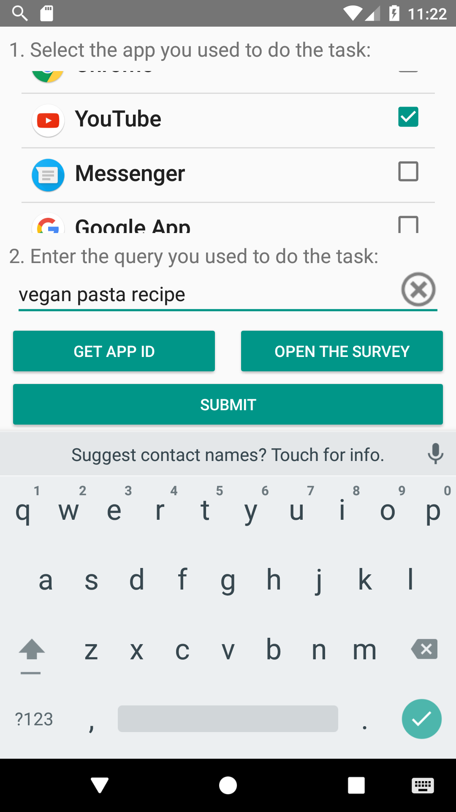
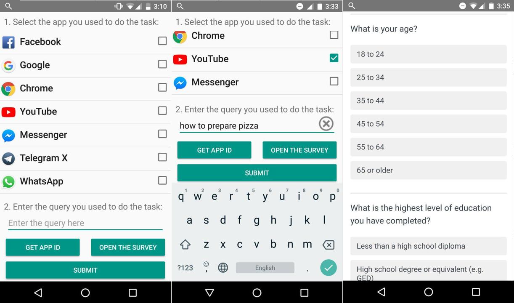
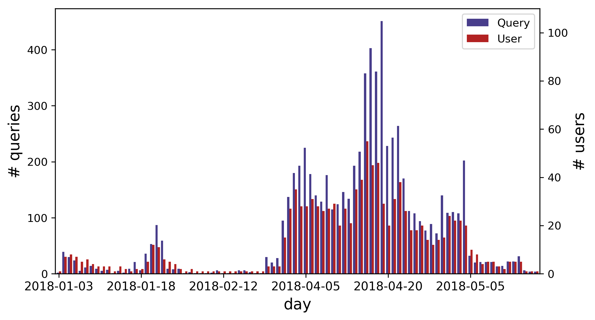
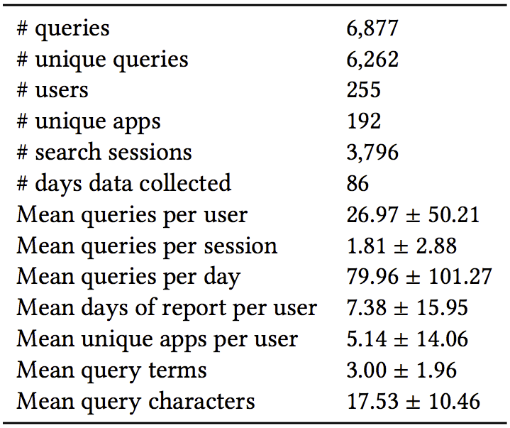

Data
ISTAS: an in situ collection of cross-app mobile search queries Download ISTAS
Recent years have witnessed a rapid growth in the use of mobile devices, enabling people to access the Internet in various contexts. More than 77% of Americans now own a smartphone, with an increasing trend in terms of the time people spend on their phones.
More recently, with the release of intelligent assistants such as Google Assistant, Apple Siri, and Microsoft Cortana, people are experiencing mobile search through a single voice-based interface. These systems introduce several research challenges. Given that people spend most of their times in apps and, as a consequence, most of their search interactions would be with apps (rather than a browser), one limitation is that users are unable to use a intelligent assistants to search within many apps.
So far, all the studies on mobile information retrieval have focused on a single interface for search (i.e., Google, Bing, etc.). However, in our previous work [1], we showed that this is no longer the case with the availability of various apps featuring their own search engine. Nowadays, users tend to search for various modalities of information using different apps. As of 2016, the average U.S. user spends 5 hours on mobile devices per day, with just 8% of it spent in the phone's browser. In fact, people spend most of their time (72%) using apps that have their own search feature. Moreover, according to [1], instead of Web search apps such as Google and Bing, users prefer to submit the majority of their queries to a more specific app.
In this data collection, we are particularly interested in addressing most of the limitations of UniMobile. In other words, as we evaluated the need for a unified mobile search system in [1] through the collection of UniMobile via crowdsourcing, in this collection our goal was to collect a more realistic data collection, enriched with users' contexts (i.e., time and app usage statistics). Hence, we recruited 255 participants through an open online call asking them to install uSearch on their smartphones and let it run for at least 24 hours. During the study, we asked the participants to report their mobile searches using uSearch as soon as they did the search. A search report consisted of the search query as well as the app in which the search was done. For instance, if a participant entered the query "vegan pasta recipe" in the YouTube app, they would report their search as shown in the image below:

-
uSearch: In order to facilitate the query report procedure, we developed uSearch, an Android app shown in figures below.
As shown below, uSearch consists of three sections. The upper part lists all the apps that are installed on the phone, with the most used apps ranked higher. The participants were supposed to select the app in which they had done their real-life search (e.g., Facebook). In the second section, the participants were supposed to enter exactly the same query that they had entered in the target app. Finally, the lower part of the app, provided them easy access to a unique ID of their device and an online survey on their demographics and backgrounds.

-
Method: We recruited participants through an online platform. In the announcement, we provided all the details about the intention of the study as well as the data we were collecting. First, we asked them to complete a survey. Moreover, we mentioned all the steps required to be done by the participants in order to report a query. In short, we asked them to open uSearch after every search they did using any installed app on their phones. Then, we asked them to report the app as well as the query they used to perform their search task. We encouraged the participants to report their search as soon as it occurs, as it is very crucial to capture their context at the right moment.
After running several pilot studies, over the period of 12 weeks we recruited 255 participants, asking them to let the app running on their smartphones for at least 24 hours and report at least 5 queries. Since some people may not submit 5 search queries during the period of 24 hours, we asked them to keep the app running on their phones after the first 24 hours until they report 5 queries. Also, we encouraged them to continue reporting more than 5 queries for an additional reward. The figure below shows the distribution of number of users and queries during the period of data collection.

-
Basic Statistics: During the study period, with the help of 255 participants, we were able to collect 6,877 search queries and their target apps as well as sensor and usage data.
Here, we summarize the main characteristics of the participants based on the submitted surveys. 59% of the participants were female and 50% aged between 25 and 34. Participants were from all kinds of educational backgrounds ranging from high school diploma to PhD. In particular, 32% of them had a college degree, followed by 30% with a bachelor's degree. Smartphone was the main device used for connecting to the Internet for 53% of the participants, followed by laptop (25%). Among the participants, 67% used their smartphones more often for personal reasons rather than work. Finally, half of the participants stated that they use their smartphones 4 hours a day or more. More insights about ISTAS is available in the table below. For more detailed analysis please refer to our paper.

Download
ISTAS data collection can be downloaded as a ZIP file here. If you use ISTAS dataset in your next research paper, please consider citing our paper, using this BibTeX file.
Note: We only release the data that we used in our CIKM '18 paper [2]. Parts of the data cannot be released due to privacy issues. However, if you need more data, please contact us. We try to release non-sensitive data upon request.
Format
Upon downloading the data, you get one compressed file. You can uncompress it using gzip, zip etc.
The main file is a JSON file, called istas.json, which contains the mobile search tasks.
istas.json can be easily read using pandas read_json function.
Each row of the ISTAS consists of the following columns:
- timestamp: time when the search was reported.
- UserID: the unique user identifier.
- Query: the query that was submitted to complete the search.
- App: the app that was used to complete the search.
- AppUsages: JSON dict object containing Android's app usage statistics of 24 hours before submitting the query.
Below are two example rows from the tasks file:
timestamp UserID Query App AppUsages
2018-04-17 20:28:43.438 225 photo storage ideas pinterest {'Duration': {'amazon_shopping': 54944, 'andro...'}}
2018-04-08 16:43:19.674 219 cupping to reduce cellulite chrome {'Duration': {'accuweather': 304542, 'amazon_k...'}}
@inproceedings{AliannejadiCikm18,
author = {Aliannejadi, Mohammad and Zamani, Hamed and Crestani, Fabio and Croft, W. Bruce},
title = {In Situ and Context-Aware Target Apps Selection for Unified Mobile Search},
booktitle = {Proceedings of the 27th {ACM} International Conference on
Information and Knowledge Management},
series = {{CIKM '18}},
location = {Torino, Italy},
year = {2018}
}
Acknowledgments
This work was a joint effort by Università della Svizzera italiana (USI), Lugano, Switzerland and University of Massachusetts Amherst, Amherst, MA, USA.
Thanks to Jacopo Fidacaro, Luca Costa, Mohammad Aliannejadi, Hamed Zamani, Fabio Crestani and W. Bruce Croft for their efforts in developing this dataset.
References
[1] Mohammad Aliannejadi, Hamed Zamani, Fabio Crestani, and W. Bruce Croft. 2018. Target Apps Selection: Towards a Unified Search Framework for Mobile Devices. In Proceedings of the 41st International ACM SIGIR Conference on Research and Development in Information Retrieval.
[2] Mohammad Aliannejadi, Hamed Zamani, Fabio Crestani, and W. Bruce Croft. 2018. In Situ and Context-Aware Target Apps Selection for Unified Mobile Search. In Proceedings of the 27th ACM International Conference on Information and Knowledge Management.